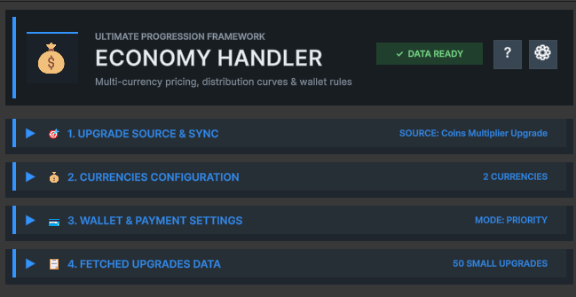
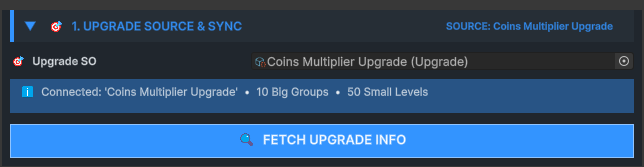
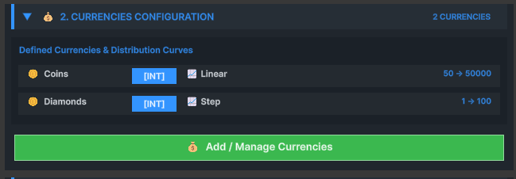
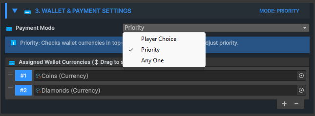
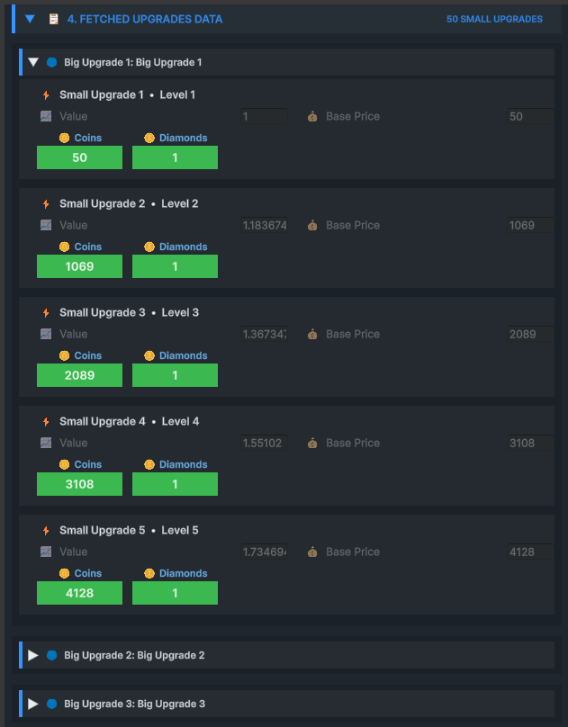

Upgrade Economy Handler
Upgrade Economy Handler connects an Upgrade SO to one or more Currency assets. It generates per-level costs, evaluates affordability and executes controlled purchases through three payment modes.

1. Upgrade Source & Sync
Links the economy to its authoritative Upgrade SO and copies its current structure.
Fetch Upgrade Info creates a flattened economy entry for every Small Upgrade while retaining its Big and Small indices, level, value and native price.

2. Currencies Configuration
Defines every currency-specific cost series available to this progression.

| Setting | Purpose |
|---|---|
| Currency Name | Matches generated cost data to a wallet Currency |
| Int / Float | Rounds or preserves distributed costs |
| Starting / Ending Value | Defines the cost range |
| Distribution | Controls the shape of cost growth |
| Random Min / Max | Bounds Random distribution |
| Custom Curve | Authors normalized progression manually |
3. Wallet & Payment Settings
Defines which Currency assets can pay and how the payer is selected.

| Payment mode | Behavior | Required API |
|---|---|---|
| Any One | Uses the first affordable wallet currency with a matching cost | PurchaseNextUpgrade |
| Priority | Uses wallet order as explicit payment priority | PurchaseNextUpgrade |
| Player Choice | The game presents valid options and supplies the selected Currency | GetAffordableOptionsForNext + PurchaseWithCurrency |
4. Fetched Upgrades Data
Shows the flattened upgrade sequence and generated cost for every currency.

- Big and Small Upgrade indices
- Level, value and native price
- One generated cost entry per configured currency
- Sequential order used by purchase and Buy Max queries
Purchase results and events
Every purchase returns structured success or failure information.
- OnUpgradePurchased
- OnUpgradeFailed
- OnFullyUpgraded
| Result field | Meaning |
|---|---|
| success | Whether the transaction completed |
| failReason | Readable explanation when it did not complete |
| currencyUsed | Name of the paying Currency |
| amountDeducted | Final charged amount |